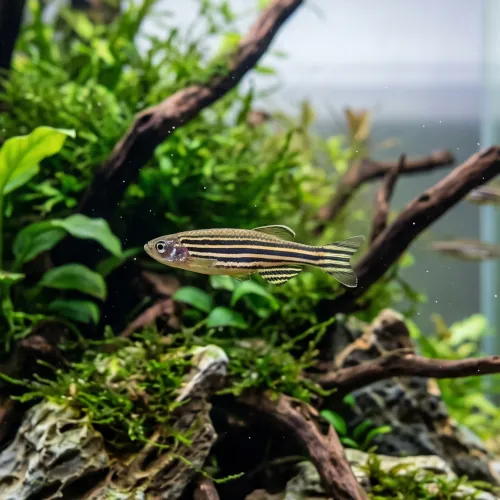

Nome popular principal
Paulistinha
Paulistinha, Dânio-Zebra, Zebra Danio, Peixe-Zebra
Ficha de peixe
Dânios e Ciprinídeos
Um dos peixes mais resistentes e energéticos do aquarismo, perfeito para iniciantes e aquários comunitários movimentados.

Nome popular principal
Paulistinha, Dânio-Zebra, Zebra Danio, Peixe-Zebra
Nome científico
Nome técnico essencial para taxonomia, cruzamento de manejo e referência editorial consistente.
Dificuldade de manejo
Use este nível como referência inicial, sempre considerando volume, estabilidade e compatibilidade do aquário.
Seção 1
Seção 2
Seções 4 a 6
Paulistinha tem hábito alimentar onívoro. Excelente. 1 a 2 vezes ao dia. Alimenta-se com extrema voracidade de rações em flocos ou micro-grãos, aceitando prontamente alimentos vivos como dáfnias e artêmias.
Machos são mais esguios e apresentam tons dourados entre as listras; fêmeas são mais roliças e prateadas. Tipo de reprodução: Ovíparo. Dificuldade de reprodução: Fácil. Espécie muito fácil de reproduzir, dispersando centenas de ovos sobre o substrato ou vegetação durante o amanhecer.
Alta. Substrato recomendado: Areia fina ou cascalho rolado de granulometria fina. Necessidade de esconderijos: Média. Necessita de espaço livre para nado horizontal e beneficia-se de vegetação nas laterais e fundo do aquário.
Seção 7
Apresenta excelente resistência a variações de temperatura e parâmetros de água, sendo altamente recomendado para iniciantes.
Seção 8
Tolera temperaturas mais amenas (entre 18°C e 26°C), necessitando de aquecedor apenas em regiões onde o inverno é muito rigoroso.
Recomenda-se um grupo mínimo de 6 indivíduos para que nadem em cardume e expressem seu comportamento natural.
Não é o ideal, pois o Paulistinha é muito rápido e pode beliscar as nadadeiras longas do Betta ou estressá-lo com sua agitação.